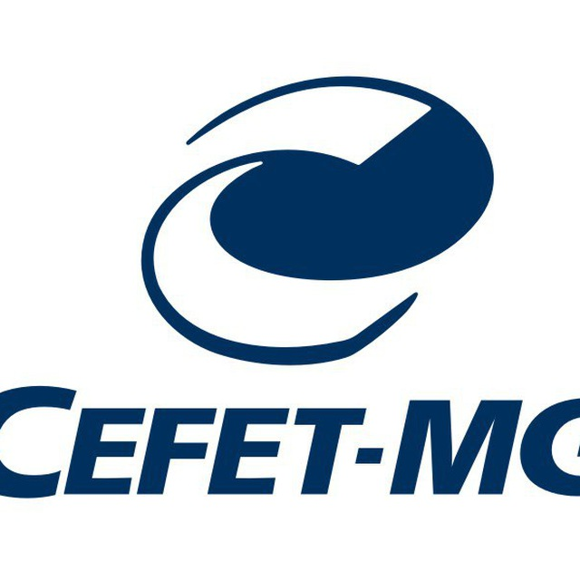

Projetos
-

AcadBot
Bot do Telegram desenvolvido para interagir com o extinto sistema Acad. Após o aluno cadastrar sua matrícula e senha, o bot enviava mensagens avisando assim que notas eram lançadas no sistema. Infelizmente, após a substituição do Acad pelo SIGAA, o serviço foi interrompido.
-
Escola Satélite
Projeto desenvolvido durante o estágio na empresa Portulan para o cliente Escola Satélite. O projeto se tratou de um sistema para incrição em cursos de pós-graduação telepresenciais da PUC Minas. O sistema foi desenvolvido em dois módulos: WEB e desktop. O módulo WEB foi desenvolvido em PHP, sendo responsável pela interação com os alunos, enquanto que o módulo desktop foi desenvolvido em Delphi e é responsável por toda a gestão do sistema.
-
GEPS - Gestão Estratégica de Programas Sociais
O GEPS é uma poderosa ferramenta de planejamento e gestão de Programas Sociais, desenvolvida pela Portulan para os municípios, controlando as concessões dos benefícios, seja por folha de pagamento, doações, empréstimos, ou qualquer serviços prestados a comunidade.
-
Galaxian
Para a disciplina de Computação Gráfica do curso de Engenharia de Computaçã do CEFET-MG, foi desenvolvido um joguinho de computador inspirado no famoso jogo Galaxian, lançado pela Namco para o Atari, utilizando OpenGL e a biblioteca SOIL. O projeto foi inteiramente desenvolvido em C e, para muitos alunos, foi o primeiro contato com mundo de desenvolvimento de jogos.
-
Pré-Enem Brasil
O Pré-Enem é um sistema desenvolvido na empresa Portulan, em parceria com a Escola Satélite e Secretaria de Educação de Minas Gerias, para disponibilizar um curso telepresencial preparatório para o Exame Nacional do Ensino Médio. Esse sistema permite que alunos localizados em todo o estado assistam aulas e façam atividades focadas nos eixos dos exames, além de possuir um módulo de participação em escala, o que permite aos alunos enviarem dúvidas e se comunicarem com os professores durantes as aulas.